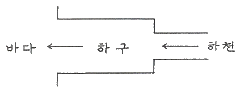
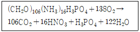
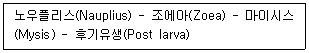

해양조사산업기사 (2014-05-25 기출문제)
1과목: 물리해양학
1. 쿠로시오 해류와 약학적으로 가장 비슷한 성격을 가지고 있는 것은?
- 멕시코 만류
- 남적도 해류
- 캘리포니아 해류
- 포클랜드 해류
(정답률: 91%)

2. 지형류에 작용하는 힘은?
- 전향력, 마찰력
- 전향력, 압력경도력
- 압력경도력, 마찰력
- 마찰력, 중력
(정답률: 82%)
3. 연안의 어느 지점의 연평균 해면이 수준점(TBM) 하 250cm 이고, M2, S2, K1, O1 분조의 조차가 각각 120cm, 30cm, 10cm, 5cm라 하면 이 지점의 기본 수준면(DL)은 수준점(TBM) 하 얼마에 위치하는가?
- 250 cm
- 332.5 cm
- 415 cm
- 580 cm
(정답률: 62%)
4. M2 분조의 각속도는 시간당 28.9841도 이며 S2 분조의 각속도는 시간당 30도이다. 조화분석으로 이 두 분조를 분리해내기 위해 필요한 최소한의 조석관측 자료의 길이는?
- 8일
- 15일
- 21일
- 30일
(정답률: 90%)
5. 취송류에 관한 설명 중 틀린 것은?
- 표면에서의 흐름은 북반구에서 풍향에 대하여 대개 오른쪽으로 45° 방향으로 흐른다.
- 표면에서 깊이 내려 갈수록 유속은 작아진다.
- 상부마찰 저항심도는 풍속에 역비례하고 위도의 크기에 비례한다.
- 상부 마찰저항 심도 내 해수 전체는 북반구에서 풍향의 오른쪽 90° 방향으로 흐른다.
(정답률: 80%)
6. 만 내에서 발생하는 부진동의 주기는 무엇과 관계가 있는가?
- 만의 길이에만 의존
- 만의 폭에만 의존
- 만의 길이와 폭에만 의존
- 만의 길이와 폭, 깊이에 의존
(정답률: 87%)
7. 최근 해양학에서 주로 사용하는 염분의 단위는?
- psu
- %
- per mil
- ptu
(정답률: 91%)
8. 그림과 같이 하구(표면적 100km2, 평균수심 50m)로 하천오염수(오염농도 5ppm)가 시간당 0.⑤ km3로 유입되기 시작한다. 이 하구의 잔류시간(residence time)시간은?

- 1시간
- 10시간
- 100시간
- 1000시간
(정답률: 79%)
9. El Nino와 관련된 해양현상 중 맞지 않는 것은?
- 페루연안의 수온이 높아진다.
- 적도류가 약화된다.
- 태평양 서부의 저기압이 약화된다.
- 인도네시아 부근의 강우량이 많아진다.
(정답률: 65%)
10. 마찰이 작용할 경우 지형류의 방향은 어떻게 변하는가?
- 변화 없다.
- 저압부쪽로 다소 편향
- 고압부쪽로 다소 편향
- 북반구에는 고압부로, 남반구에서는 저압부로 편향
(정답률: 65%)
11. 해수의 연직 안정도가 가장 큰 계절은?
- 봄
- 여름
- 가을
- 겨울
(정답률: 82%)
12. σt와 △st에 대한 설명 중 옳은 것은? (단, σt는 밀도, △st는 비용을 표시함)
- σt가 증가하면 △st도 증가한다.
- 수온이 증가하면 σt가 증가한다.
- 염분이 감소하면 σt가 증가한다.
- σt가 증가하면 △st는 감소한다.
(정답률: 77%)
13. 해양에서 적외선 파장을 이용하여 수온을 측정하는 위성 장치는?
- AVHRR
- CZCS
- AQUR
- NDVI
(정답률: 84%)
14. 해파의 군속도(group velocity)에 관한 설명 중 옳은 것은?
- 심해파의 군속도는 항시 파속보다 느리다.
- 천해파의 군속도는 항시 파속보다 빠르다.
- 천해파의 군속도는 수심이 깊을수록 느리다.
- 심해파의 군속도는 수심이 깊을수록 빠르다.
(정답률: 68%)
15. 다음 중 해수의 수온, 염분 그리고 압력으로부터 해수의 밀도를 계산해낼 수 있는 수단은?
- IES80
- WGS-84
- NAD-27
- NQAA-11
(정답률: 62%)
16. 대한해협을 거쳐 동해로 유입되는 해류는?
- 쓰시마(대마) 해류
- 오야시오
- 리만 해류
- 쿠로시오
(정답률: 75%)
17. 북반구에서 연안용승(coastal upwelling)이 나타날 수 있는 가장 적합한 경우는? (단, 보는 위치를 육지를 기준으로 할 것)
- 해안을 향해 바람이 불어갈 때
- 해안을 왼쪽에 두고 육지와 평행하게 남풍이 바람이 불 때
- 바람이 대각선 방향으로 해안 쪽으로 불어갈 때
- 해안을 오른쪽에 두고 육지와 평행하게 남풍의 바람이 불 때
(정답률: 78%)
18. 우리나라 해양의 수심은 다음 중 어느 것을 기준면으로 채택하고 있는가?
- 최저저조면
- 대조평균저저조면
- 인도대조저조면
- 평균대조저조면
(정답률: 77%)
19. 지구-달의 체계에 있어서 기조력이 작용하더라도 조석현상이 일어나지 않는 경우는 어떠한 가정 하에 발생할 수 있는가?
- 달과 태양이 같은 위도에 있는 경우
- 지구의 자전주기가 달의 공전주기와 같을 경우
- 달이 자전을 하지 않을 경우
- 지구가 자전을 하지 않을 경우
(정답률: 84%)
20. ADCP에 의한 유속관측을 정상적으로 수행하더라도 좋은 자료를 얻기 어려운 환경은?
- 수온과 염분의 연직변화가 매우 큰 환경
- 해수가 매우 맑은 환경
- 파도가 강한 환경
- 조류가 강한 환경
(정답률: 63%)
2과목: 화학해양학
21. 리-비히의 최소법칙에 관한 설명으로 가장 적합한 것은?
- 식물의 증식은 최소량으로 존재하는 영양물질에 의하여 제약받는다.
- 영양물질이 많으면 많을수록 모두 섭취한다.
- 해수중의 규산염의 양에 비례하여 다른 영양염을 흡수한다.
- 흡수하는 영양염의 N:P 비율은 8:1 이다.
(정답률: 78%)
22. 망간에 대한 설명으로 옳지 않은 것은?
- 이산화망간은 질산과 같이 쉽게 환원한다.
- 환원하기 위해서는 유김루과 상당한 시간이 필요하다.
- 물에 녹기 쉬운 것은 +2가의 망간이다.
- 산화망간은 쉽게 물에 녹는다.
(정답률: 67%)
23. 다음 중 심해저퇴적물의 퇴적속도를 측정하는데 이용되는 핵종이 아닌 것은?
- 14C
- 230Th
- 228Th
- 231Pa
(정답률: 60%)
24. 물이 든 비커에 소금을 넣고 잘 저어서 완전히 녹였을 때 관측되는 현상으로 맞는 것은?
- 비커 안 용액의 부피는 변화가 없다.
- 비커 안 용액의 부피는 줄어든다.
- 비커 안 용액의 부피는 늘어난다.
- 비커 안 용액의 부피는 줄었다가 늘어나는 것을 불규칙하게 반복한다.
(정답률: 82%)
25. 부영양화 해역의 특징이 아닌 것은?
- COD가 높다.
- 부영양화된 바다는 쉽게 회복되지 않는다.
- 깊이가 깊고 해류순환이 큰 바다일수록 심하다.
- 육지로부터 오·폐수의 유입이 크다.
(정답률: 83%)
26. 해수분석에 있어서 해수 시료를 채취하여 분석 시까지 보관하는 관점에서 분석 항목과 보관용기 및 보존 방법의 연결이 옳지 않은 것은?
- 염분 – 유리용기 – 왁스로 밀봉
- 질산염 – 플라스틱용기 - 냉동보관
- 규산염 – 유리용기 - 냉동보관
- n-Hexane추출물질 – 유리용기 – 염산으로 PH＜4로 보관
(정답률: 68%)
27. 해수중에서 존재하는 원소들 중 음이온으로 존재하는 것은?
- Cl
- Na
- K
- Mg
(정답률: 79%)
28. 다음 중 동위원소 질량분석으로 알아내기에 가장 어려운 항목은?
- 어류의 먹이 종류
- 산호초의 나이
- 연어의 회유 경로
- 고기후
(정답률: 75%)
29. 해수의 적조현상과 가장 관련이 먼 것은?
- 중금속
- 영양염
- 정체해역
- 유기폐수의 과다 유입
(정답률: 83%)
30. 다음 중 해수의 pH를 증가시키는 요인이 되는 것은?
- 해양생물에 의한 광합성작용 증가
- 해양동물에 의한 호흡작용의 증가
- 수온의 증가
- 수심의 증가
(정답률: 64%)
31. 용존 이산화탄소의 해수 중 수직적 분포양상에 대한 설명으로 옳지 않은 것은?
- 표층역에서 최소값을 보인다.
- 약 1000m 수심에서부터 다시 감소하기 시작한다.
- 수심이 깊어질수록 증가한다.
- 표층에서는 식물플랑크톤에 의한 광합성으로 유기물로 환원되어 해수 중에서 제거된다.
(정답률: 59%)
32. 해수중에 존재하는 질소 중 규조류가 흡수하는 영양염류와 가장 거리가 먼 것은?
- NO3- - N
- NH4+ - N
- NO2- - N
- 용존 N2
(정답률: 81%)
33. 해양의 유기물분해 과정은 아래 식으로 나타낼 수 있다. 이 식에서 생성되는 이산화탄소와 사용되는 산소의 분자비인 호흡률의 값은?

- 106
- 138
- 7.8
- 0.78
(정답률: 71%)
34. 방사성 동위원소를 사용한 해양퇴적물의 퇴적속도 결정방법 중에서 비교적 반감기가 짧아서 연안퇴적물의 퇴적속도 결정에 주로 이용되는 동위원소는?
- 210Pb
- 230Th
- 231Pa
- 40K
(정답률: 80%)
35. 다음 중 해양에서 용존산소의 분포에 가장 영향을 미치지 않은 요인은?
- 생물에 의한 호흡
- 광합성 작용
- 표층수와 저층수의 혼합
- 무기입자의 침강
(정답률: 67%)
36. 다음 중 해수시료의 미생물에 의한 유기물 분해를 막기 위한 보관 온도로 가장 적합한 것은?
- 10℃ 이하
- 5℃ 이하
- 0℃ 이하
- -20℃ 이하
(정답률: 77%)
37. 일반 해양에서 탄소의 순환에 가장 영향을 적게 미치는 것은?
- 해양생물의 성장
- 유기물의 침강
- 유기물의 분해
- 표층 산소의 대기 방출
(정답률: 65%)
38. 해수 조성에 관한 설명 중 옳지 않은 것은?
- 해수의 화학적 성분의 상대적인 비는 염분이 변화해도 일정하다.
- 질소, 인, 규소 등 생물과 관련된 원소들은 표층수보다 저층수에 높에 분포한다.
- 알칼리금속은 98% 이상이 유리이온으로 존재한다.
- 알칼리 금속 및 알칼리 토금속의 평균체류시간은 극히 짧다.
(정답률: 69%)
39. 바닷물에 녹아 있는 주성분 원소 사이의 상호 비율은 다음 중 어떤 물과 가장 가까운가?
- 빗물
- 강물
- 지하수
- 토양수
(정답률: 75%)
40. 해양에서 적조의 발생 원인과 가장 거리가 먼 것은?
- 영양염류의 증가
- 태풍의 영향
- 수온의 상승
- 유기물 유입
(정답률: 85%)
3과목: 생물해양학
41. 온대지방의 연안 해역에 있어서 여름철 표층의 기초생산이 저하되는 가장 큰 원인은?
- 높은 염분농도
- 일사량의 과다
- 적조발생
- 영양염의 고갈
(정답률: 78%)
42. 다음 중 갑각류에 속하면서 성체가 고착생활을 하는 것은?
- 따개비
- 전복
- 게
- 멍게
(정답률: 73%)
43. 다음과 같은 유생기를 갖는 생물은?

- 꽃게
- 보리새우
- 우렁쉥이
- 해삼
(정답률: 82%)
44. 동식물부유생물들이 침강속도를 늦추기 위해서 나타내는 생태, 생리적 적응 기작이 아닌 것은?
- 몸의 표면에서 돌출한 각종 돌기나 가시구조물
- 체적(크기)의 감소
- 전체적으로 평평한 몸 구조
- 몸체 구성물질의 수동적 조절
(정답률: 75%)
45. 다음 중 조간대 해수의 염분 변화에 가장 영향이 적은 것은?
- 계절
- 일조(日照)
- 강우(降雨)
- 퇴적물
(정답률: 82%)
46. 우리나라 연안에 서식하는 대표적인 홍조류는?
- 다시마
- 김
- 미역
- 청각
(정답률: 85%)
47. 저서생태계에서 서식하는 각종 저서동물들의 굴착, 이동 등에 의해 저질의 물리, 화학적 환경이 변화되는 현상을 무엇이라 하는가?
- 표복행동
- 생물교란(작용)
- 편해작용
- 시너지효과
(정답률: 88%)
48. 미소플랑크톤(Nanoplankton)은 어느 정도의 크기인가?
- 0.2 ~ 2.0 μm
- 0.2 ~ 20 cm
- 0.02 ~ 0.2 μm
- 2.0 ~ 20 μm
(정답률: 76%)
49. 다음 중 유영동물의 일종이 아닌 것은?
- 바다거북
- 바다뱀
- 오징어
- 야광충
(정답률: 87%)
50. 해양생태계에 있어서 동물플랑크톤은 대부분이 무엇인가?
- 기초생산자이다.
- 1차 소비자이다.
- 기초 생산자인데, 1차 소비자의 역할도 한다.
- 먹이 피라미드의 제일 위에 있다.
(정답률: 84%)
51. 일반적으로 외양에서 적조를 일으키는 종류는?
- 남조류 중 트리코데스미움(Trichodesmium)
- 규조류 중 스케레토네마(Skeletonema)
- 편조류 중 김노디늄(Gymnodinium)
- 요각류 중 카라누스(Calanus)
(정답률: 69%)
52. 어도(魚道)와 관계가 없는 종류는?
- 뱀장어
- 은어
- 연어
- 고등어
(정답률: 70%)
53. 다음 물질 중에서 일반 해수에 가장 많은 것은?
- H2CO3
- HCO3-
- CO3-
- CO2
(정답률: 73%)
54. 해수 중의 무기 영양염류를 필수적으로 필요로 하는 생물은?
- 어류
- 저서동물
- 식물플랑크톤
- 동물플랑크톤
(정답률: 91%)
55. 하등한 생물체 가운데 광합성 능력과 먹이 섭식 능력을 모두 갖춘 생물은?
- 자가영양생물
- 공생생물
- 기생생물
- 혼합영양생물
(정답률: 86%)
56. 하구역에 서식하는 해양생물이 반드시 갖추어야 할 특성은?
- 광염성
- 호냉성
- 부착성
- 주광성
(정답률: 88%)
57. 우렁쉥이(멍게)가 속하는 분류군은?
- 자포동물문
- 연체동물문
- 극피동물문
- 척삭동물문
(정답률: 64%)
58. 선박이나 어구에 대한 부착생물 방지용 페인트의 첨가제로 널리 사용되었고, 프랑스에서의 패각기형, 채묘부진, 영국에서의 고둥류의 임포섹스(imposex) 현상 등과 가장 밀접한 관계를 가지는 것은?
- Cd
- DDT
- PCB
- TBT
(정답률: 80%)
59. 다음 중 해역의 수괴짚종으로 잘 알려진 플랑크톤은?
- 화살벌레
- 키토세로스
- 오벨리아
- 비둘피아
(정답률: 77%)
60. 하구역의 생태적 특징 설명으로 틀린 것은?
- 수온 염분의 단기변화가 외양에 비하여 크다.
- 해수종 및 담수종이 공존하여 인접 연안보다 생물다양성이 높다.
- 조류가 강하고 탁도가 높아 부유식물 생산력이 낮다.
- 광온-광염성인 생물이 주를 이룬다.
(정답률: 69%)
4과목: 지질해양학
61. 망간단괴(manganese nodule)가 가장 많이 발달하는 곳은?
- 수심 30 ~ 70m의 해저
- 수심 100 ~ 200m의 해저
- 수심 1000 ~ 1500m의 해저
- 수심 4000 ~ 5000m의 해저
(정답률: 82%)
62. 다음 장비에서 해상에서의 위치 결정과 관계없는 것은?
- 데카 트리스폰더, 인공위성 항법장치
- 6분의와 삼간분도기
- 로란 또는 미니 레인져
- 측면 주사장치(side scan sonar)
(정답률: 75%)
63. 차세대 에너지원으로 각광받고 있는 가스수화물(Gas hydrate)의 주성분은?
- 메탄
- 에탄
- 부탄
- 프로판
(정답률: 82%)
64. 다음 중 베게너(Wegener)가 주장한 학설은?
- 판구조론
- 해저확장설
- 대륙이동설
- 지구수축설
(정답률: 75%)
65. 삼각주에 대한 설명 중 틀린 것은?
- 조립과 세립의 퇴적물을 찾아볼 수 있다.
- 사교층리, 연흔이 발달되어 있다.
- 화석은 기수, 담수의 육상생물이 존재한다.
- 침식작용에 의하여 암반이 노출되어 있다.
(정답률: 78%)
66. 망간단괴는 다음 중 어떤 퇴적물에 속하는가?
- 육상기원퇴적물
- 생물기원퇴적물
- 수성기원퇴적물
- 우주기원퇴적물
(정답률: 79%)
67. 대륙주변부에 포함되지 않는 것은?
- 대륙붕(continental shelf)
- 대륙사면(continental slope)
- 대륙대(continental rise)
- 해저산맥(submarine ridges)
(정답률: 86%)
68. 아래 용어 중 해빈의 퇴적구조와 관계없는 것은?
- 연흔(ripple)
- 층리(bedding)
- 소류(rill mark)
- 조흔구조(striationn)
(정답률: 48%)
69. 대륙붕을 해안선에서 붕단(Shelf break)까지 연장된 지역이라고 할 때 붕단의 평균 수심 범위는?
- 약 130 ~ 140m
- 약 220 ~ 230m
- 약 310 ~ 320m
- 약 400m
(정답률: 77%)
70. 퇴적물로 구성된 해빈 중 경사가 가장 급한 곳은?
- 고운 모래로 구성된 해빈
- 펄로 구성된 해빈
- 자갈로 구성된 해빈
- 굵은 모래로 구성된 해빈
(정답률: 82%)
71. 심해에서 해수의 깊이가 깊어지면 CaCO3의 용해가 증가해 해수 속의 탄산염 퇴적물이 모두 용해되는데, 이 깊이를 무엇이라 하는가?
- 에크만 수심(Ekman depth)
- 쇄파대(breaker zone)
- 탄산염보상수심(CCD)
- 파동기저(wzve base)
(정답률: 78%)
72. 해수로부터 채취하는 광물자원 중 가장 보편적인 것은?
- 마그네슘
- 소금
- 브롬
- 청수
(정답률: 76%)
73. 음파탐사 중 가장 음파의 산란작용이 많이 일어나는 퇴적층은 어떤 퇴적물로 구성된 것인가?
- 모래
- 자갈
- 펄
- 펄과 모래의 혼합
(정답률: 63%)
74. 탄성파 탐사에 대한 설명 중 틀린 것은?
- 반사법은 탄성파가 임계굴절이 일어날 수 있는 곳에서만 실시한다.
- 굴절법과 반사법 모두 수중청음기를 통해 탄성파를 수신한다.
- 반사법 자료를 해석하기 위해서는 전파경로상의 모든 점의 속도정보가 필요하다.
- 석유탐사는 주로 반사법을 사용한다.
(정답률: 70%)
75. 변환단층(transform fault)이란?
- 정단층의 일종이다.
- 역단층의 일종이다.
- 대양저 산맥에서 볼 수 있는 단층이다.
- 성장단층의 일종이다.
(정답률: 79%)
76. 다음 중 조간대 퇴적물의 입도조직 특성을 가장 옳게 설명한 것은?
- 바다 쪽 부분에서 육지 쪽 부분으로 갈수록 퇴적물의 대부분이 세립화한다.
- 바다 쪽 부분에서 육지 쪽 부분으로 갈수록 퇴적물의 대부분이 조립화한다.
- 바다 쪽 부분에서 육지 쪽 부분으로 갈수록 입자크기에 관계없이 분급도가 양호해진다.
- 바다 쪽 부분에서 육지 쪽 부분으로 갈수록 입자의 크기에 관계없이 분급도가 불량해진다.
(정답률: 44%)
77. 다음 중 연안용승작용이 활발한 대륙주변부의 해저에서 주로 발견되는 자생광물은?
- 어란석
- 황철석
- 인회석
- 방해석
(정답률: 52%)
78. 해저 퇴적물 중에서 자생퇴적물이란?
- 화학반응으로 해저에 퇴적된 것을 말한다.
- 육상기원의 퇴적물이 해저로 이동되어 퇴적된 것을 말한다.
- 유기물이 자라서 된 것을 말한다.
- 유기물의 유해가 쌓여서 된 것을 말한다.
(정답률: 62%)
79. 다음 퇴적물 중 원마도(roundness)가 가장 양호한 것은?
- 하천 퇴적물
- 호수 퇴적물
- 빙하 퇴적물
- 해빈 퇴적물
(정답률: 77%)
80. 다음 중에서 해저 선상지에서 주로 발견되는 퇴적물(암)은?
- 적색점토
- 산호초
- 암염층
- 저탁암
(정답률: 67%)